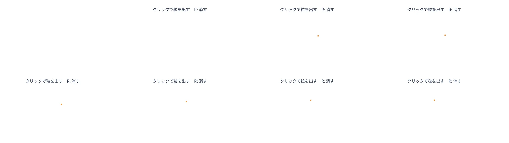
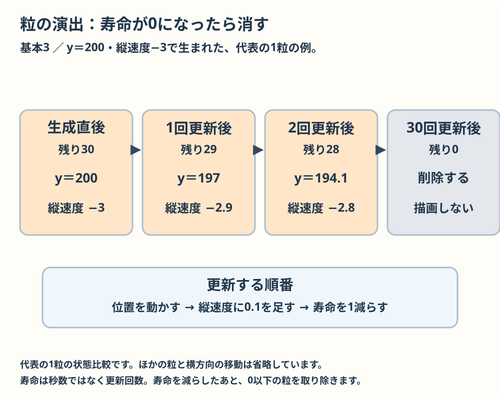

粒の演出を作る
始める前に
ZIPを展開してできたフォルダーでindex.htmlを開きます。ZIPにはひな型の3ファイルが入っています。
WindowsでZIPを展開する（動画）
変更前を探し、変更後に置き換えて保存し、index.html を開き直します。
ステップ 1：クリック位置に粒を作る
このステップの見本を図で見る

このステップの見本
この行を足す前 変わったコードの一例（script.js）
const x = (event.clientX - rect.left) * canvas.width / rect.width;
見本で確かめること
クリックした場所に四角い粒が出ます。
目標
クリック位置に粒を作る。
小さな作業
上から順に作業します。目印を探し、その下のコードを書きます。
粒を覚える
作業用の script.js の先頭近くで、次の目印のすぐ下に追加します。
目印
const ctx = canvas.getContext("2d");追加するコード
let particles;let は後で値を変えられる変数を作ります。particles に粒をまとめます。
空の粒から始める
start() から update() の閉じ波括弧までで、次の範囲を置き換えます。
置き換える範囲
function start() {
}
function update() {
}置き換えるコード
function start() {
particles = [];
}
function update() {
}= は右の値を左に入れる代入です。[] は空の配列で、最初は粒がありません。
操作を案内する
draw() の画面を消す行の下で、次の目印のすぐ下に追加します。
目印
ctx.clearRect(0, 0, canvas.width, canvas.height);追加するコード
ctx.fillStyle = "#26334a"; ctx.font = "26px sans-serif";
ctx.fillText("クリックで粒を出す R: 消す", 160, 70);色と文字の大きさを決め、クリックと R の操作を表示します。
粒を描く
操作案内の下で、次の目印のすぐ下に追加します。
目印
ctx.fillText("クリックで粒を出す R: 消す", 160, 70);追加するコード
ctx.fillStyle = "#e79548";
for (const p of particles) ctx.fillRect(p.x - 4, p.y - 4, 8, 8);for ... of は配列から粒を一つずつ取り出します。粒の中心から左右上下に 4 ずつ広がる 8 × 8 の四角を描きます。
クリックを受け取る
draw() の後、gameLoop() の先頭行の前で、次の目印のすぐ上に追加します。
目印
function gameLoop() {追加するコード
canvas.addEventListener("click", event => {
const rect = canvas.getBoundingClientRect();
const x = (event.clientX - rect.left) * canvas.width / rect.width;
const y = (event.clientY - rect.top) * canvas.height / rect.height;
});表示上の左上からの距離を Canvas の実際の幅・高さと表示上の幅・高さの比で換算します。幅 800 を 400 で表示するとき、左から 100 の位置は Canvas 内の x = 200 です。
クリック位置に粒を追加する
クリック処理の縦座標を求める行の下で、次の目印のすぐ下に追加します。
目印
const y = (event.clientY - rect.top) * canvas.height / rect.height;追加するコード
particles.push({x, y, dx: (Math.random() - 0.5) * 4, dy: -3, life: 30});push は配列に要素を加えます。位置、横速度、縦速度、寿命を記録します。Math.random() は 0 以上 1 未満の数なので、横速度は -2 以上 2 未満です。この段階では粒はまだ動きません。
Rで粒を消す
クリック処理の閉じ括弧の下で、次の目印のすぐ下に追加します。
目印
particles.push({x, y, dx: (Math.random() - 0.5) * 4, dy: -3, life: 30});
});追加するコード
window.addEventListener("keydown", event => { if (!event.repeat && event.key.toLowerCase() === "r") start(); });R の押し始めなら start() で配列を空にします。! は真偽の反転、&& は両方の条件です。
保存して作業用の index.html を再読み込みし、クリックした位置に粒が現れ、R で消えることを確かめます。粒の移動は次に作ります。
保存後の確認
保存してゲーム画面を更新する（動画）
index.html を再読み込みします。クリックした場所に四角い粒が出ます。 この段階の見本を開く
小さな練習
粒の大きさを変えます。 練習後はコードを元に戻してください。
ステップ 2：粒を動かす
このステップの見本を図で見る
このステップの見本
この行を足す前 変わったコードの一例（script.js）
for (const p of particles) { p.x += p.dx; p.y += p.dy; p.dy += 0.1; }
見本で確かめること
クリックした粒が広がりながら落ちます。
目標
粒を動かす。
小さな作業
上から順に作業します。目印を探し、その下のコードを書きます。
粒を動かす
update() の中で、次の範囲を置き換えます。
置き換える範囲
function update() {
}置き換えるコード
function update() {
for (const p of particles) { p.x += p.dx; p.y += p.dy; p.dy += 0.1; }
}各粒の横・縦の位置に速度を足し、縦速度には 0.1 を足します。+= は今の値に足す書き方です。最初の縦速度は -3 なので上に進み、次第に下向きへ変わります。
保存して再読み込みし、クリックすると粒が上に進み、次第に下へ落ちることを確かめます。この段階では粒は消えません。
保存後の確認
クリックした粒が広がりながら落ちます。 この段階の見本を開く
小さな練習
重力0.1を0.2に変えます。 練習後はコードを元に戻してください。
ステップ 3：寿命を付けて消す
このステップの見本を図で見る
30 - 29 = 1 > 0
まだ粒を残す。
30 - 30 = 0 → life > 0 は偽
寿命0の粒を配列から消す。
ゲーム画面とコードの前後を見る
このステップの見本
particles.push({x, y, dx: (Math.random() - 0.5) * 4, dy: -3, life: 30});
変わったコードの一例（script.js）const count = Math.min(8, 100 - particles.length);
見本で確かめること
1回のクリックで最大8個出て、30回の更新で消えます。
目標
寿命を付けて消す。
小さな作業
上から順に作業します。目印を探し、その下のコードを書きます。
粒の残り回数を減らす
update() の粒を動かす行で、次の範囲を置き換えます。
置き換える範囲
for (const p of particles) { p.x += p.dx; p.y += p.dy; p.dy += 0.1; }置き換えるコード
for (const p of particles) { p.x += p.dx; p.y += p.dy; p.dy += 0.1; p.life--; }life-- は残り回数を 1 減らします。
寿命が尽きた粒を消す
粒を動かす行と update() の閉じ波括弧で、次の範囲を置き換えます。
置き換える範囲
for (const p of particles) { p.x += p.dx; p.y += p.dy; p.dy += 0.1; p.life--; }
}置き換えるコード
for (const p of particles) { p.x += p.dx; p.y += p.dy; p.dy += 0.1; p.life--; }
particles = particles.filter(p => p.life > 0);
}filter は条件を満たす要素を残した新しい配列を作ります。> 0 は 0 より大きいという意味で、寿命が 0 になった粒を取り除きます。
1回と全体の粒数を制限して追加する
クリック処理の粒を追加する行で、次の範囲を置き換えます。
置き換える範囲
particles.push({x, y, dx: (Math.random() - 0.5) * 4, dy: -3, life: 30});置き換えるコード
const count = Math.min(8, 100 - particles.length);
for (let i = 0; i < count; i++) particles.push({x, y, dx: (Math.random() - 0.5) * 4, dy: -2 - Math.random() * 2, life: 30});Math.min で 1 回に最大 8 個、全体で最大 100 個にします。例えば既に 97 個なら 3 個だけ追加します。縦速度も乱数で変え、粒ごとに動きを変えます。

クリックすると寿命30の粒が生まれます。代表の1粒を追い、更新のたびに位置と速度を変えて寿命を1減らします。寿命が0になった粒は取り除き、描きません。
y=200の例で位置→dy+0.1→life--の順序を反映。横移動は省略。寿命は更新回数、上限100粒。 更新後の生成処理は最大8粒。初期縦速度は-2-Math.random()*2で、図は-3となった1粒の例。他の粒の省略を図中に明記。
保存して再読み込みし、クリックで複数の粒が出て、しばらくすると消えることを確かめます。
保存後の確認
1回のクリックで最大8個出て、30回の更新で消えます。Rですべて消えます。 この段階の見本を開く
小さな練習
寿命30を60に変えます。 練習後はコードを元に戻してください。
自分のゲームに組み込むには
particlesと粒の生成・更新・描画を自作ゲームへ移します。
クリックの代わりに命中やクリアの位置で粒を作り、自分のupdateGameとdrawGameから粒を更新・描画します。
この欄のstartGame・updateGame・drawGameは、自分のゲーム側の開始・更新・描画の関数名の例です。自分の関数名に合わせて読み替えます。gameLoopは増やさず、既存のstart・update・drawから必要な処理を呼び、再挑戦では持ち込んだ状態や入力も初期化します。